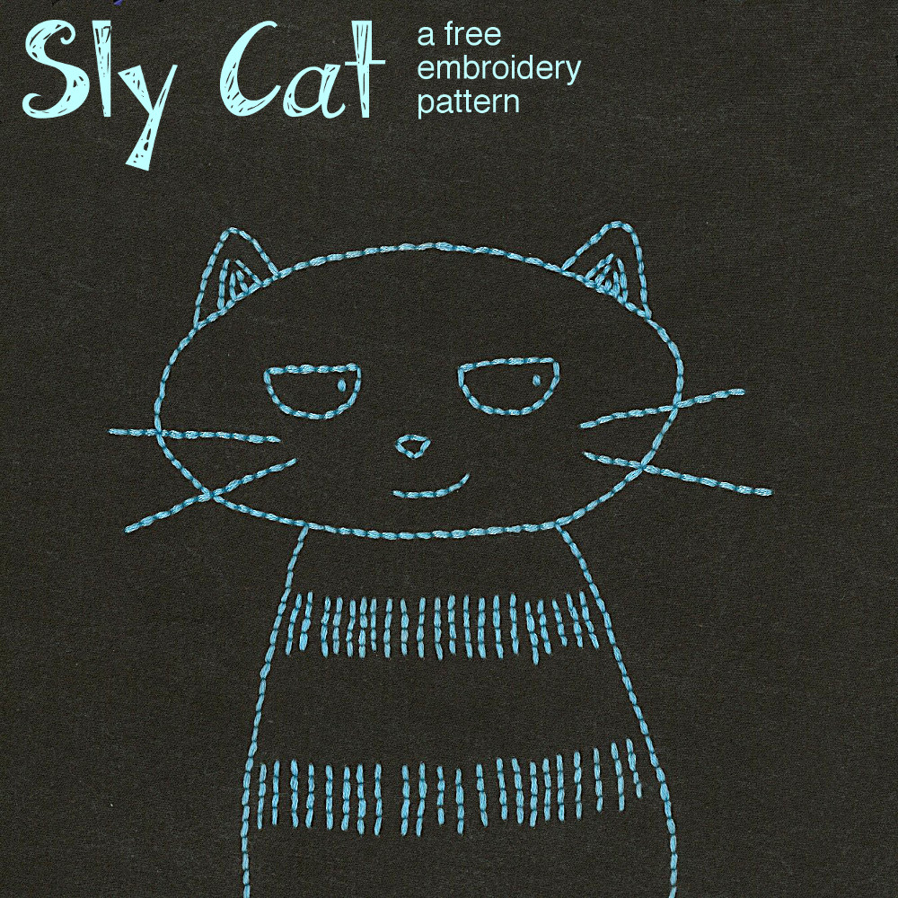
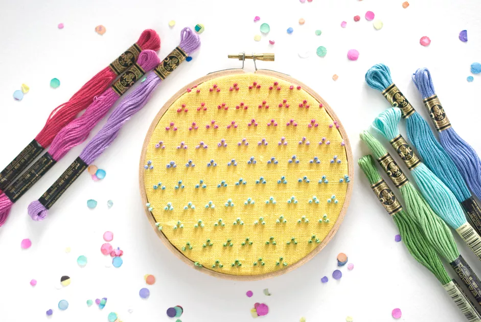
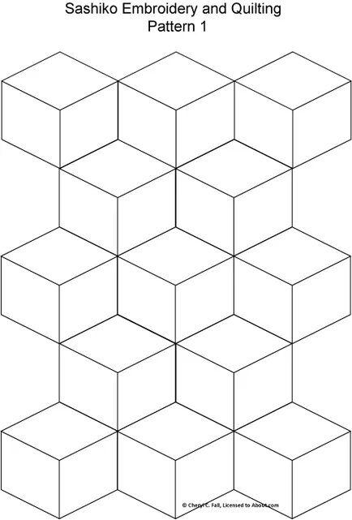
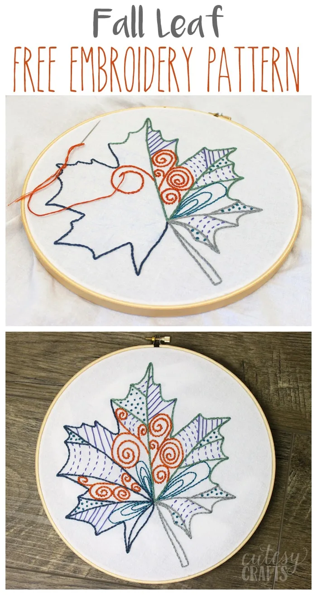
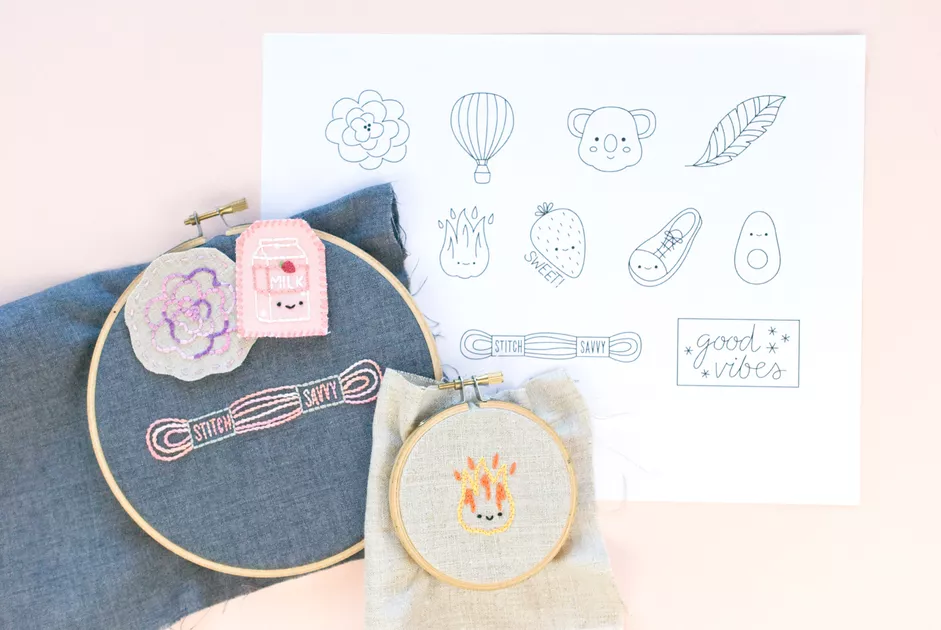
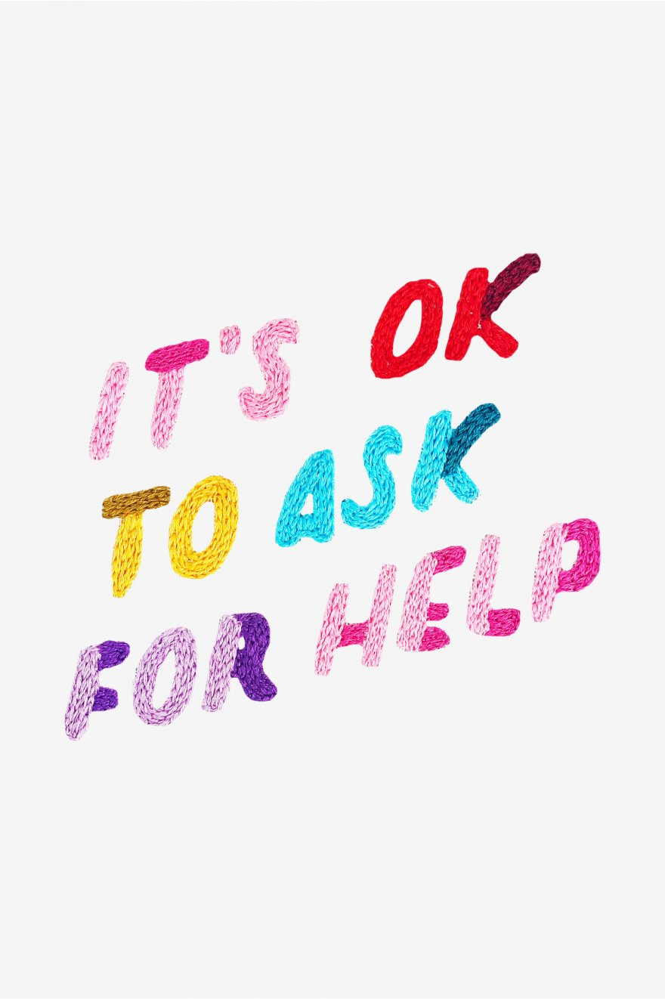
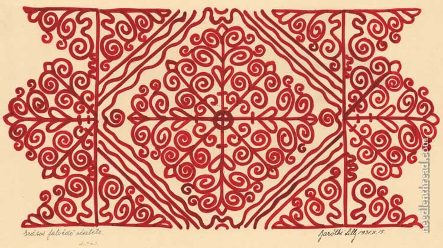
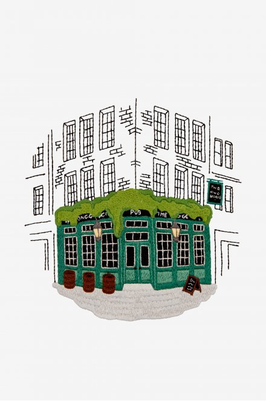
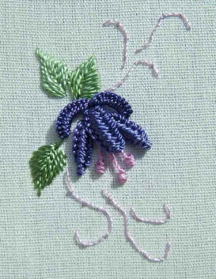
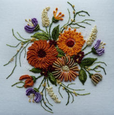

Embroidery
Embroidery is the craft of decorating fabric with other materials using a needle to apply thread or yarn.
These decorations can be purely thread or yarn or can add pearls, beads, and other embellishments.
Embroidery is a worldwide and ancient craft with many different techniques and styles to choose from, which can and should be explored.
Learn to Embroider
How to start
In this video, Chloe Wen goes over what you need to start embrodering. This is a great video for someone who has no idea where to start or what supplies they may need inlcuding hoops, floss, and needles.
Learning Resources:
- How to get started With Embrodiery the Easy Way from the Spruce Crafts
- A complete guide to embrodiery for beginners from gathered
Basic Stitches
In this video, Adam from Lovecrafts goes over 10 popular stiches used by embroiders, including the running stitch, back stitch, and split stitch.
Learning Resources:
- 15 Stitches Every Embrodier Should Know from the Spruce Crafts
- How To Videos from Mary Corbet's Needle n' Thread
Patterns
Take a look at some patterns sorted by difficulty below:
Sly Cat
This child friendly pattern is a great place for adult and children begin their embroidery adventure.
Link: Sly Cat Pattern
Modern Colorful Candlewicking
This project teaches the candlewicking technique in a modern and fun way. Great for beginners wanting to practice their stitching and colors choices.
Link: Modern Colorful Candlewicking Pattern
Sashiko Embroidery Patterns Set 1
This project works the Sashiko stitch in geometic patterns. This is a great place for those that want to learn to do straight lines to start.
Link: Sashiko Embroidery Set 1 Patterns
Leaf Leaf
This pattern is a good project for crafters who have some embroidery expiernce as it is a simple pattern with a complx mix of stitches.
Link: Fall Leaf Pattern
12 Cute Mini Patterns
This pattern actually includes 12 small, cute patterns that inlcude cute characters and items.
Link: Cute Miniature Patterns
It's Okay to Ask for Help
This pattern was made by Ciara LeRoy for World Mental Health Day in congunction with DMC.
Link: "It's Okay to Ask For Help" Pattern
Hungarian Redwork
This pattern is an advanced pattern of traditional Hungarian embroidery.
Link: Hungarian Redwork Pattern
UK Pub
This complex pattern is of a UK corner pub.
Link: UK Pub Pattern
Minuet
This tutoiral goes over how to make a minuet flower using Brazilian dimensional embroidery.
Link: Minuet Pattern
Autumn Bouquet
This tutoiral goes over how to make a Autumn Bouquet using Brazilian dimensional embroidery.
Link: Autumn Bouqyet Pattern